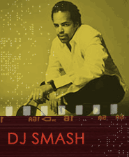

New York musicians DJ Smash, Richard Worth (flute), and rapper Gordon 'Nappy G' Clay joined with one another to form the Groove Collective in 1990. Expanding to a quintet by adding a keyboard player, bass, and drums, Groove Collective added Bill Ware (vibes player for Steely Dan), Jay Rodriguez (sax), Fabio Morgera (trumpet), Josh Roseman (trombone), and Chris Theberge (percussion) to become a small-scale big band (Ankeny [n.d.]).
Jazz remix pioneer DJ Smash has worked with a large number of contemporary performers, especially Blue Note artists, and has been releasing his own and editing remix compilations such as Phonography: A Blue Note Mix (2001), Recollection, Vol. 1 (2001), and Phonography 2 (2003).
Asked about recent work, DJ Smash says that " I'm doing what I have always done since I started playing: mixing the best of the different musical food groups like funk, jazz, Latin Caribbean, Afro beat and pop" (Mars [n.d.]).
"Rent Strike" is a collaboration between Groove Collective and keyboardist Bernie Worrell. You hear a good groove set up by DJ Smash and the percussionists of the Groove Collective and organ-sounding keyboard improvs by Bernie Worrell, solo sax by Jay Rodriguez, a huge break-down of the groove (2:22-2:41) followed by trombone improv by Joshua Roseman, and—all the while—statements of the main tune keep recurring by the band.
Listen to DJ Smash's remix of the Groove Collective with Bernie Worrell, "Rent Strike" (1994).